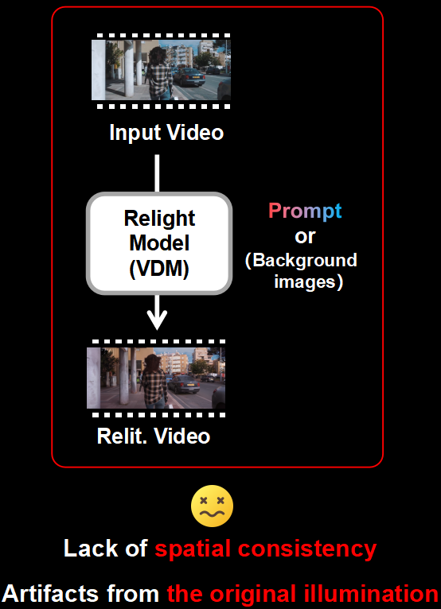
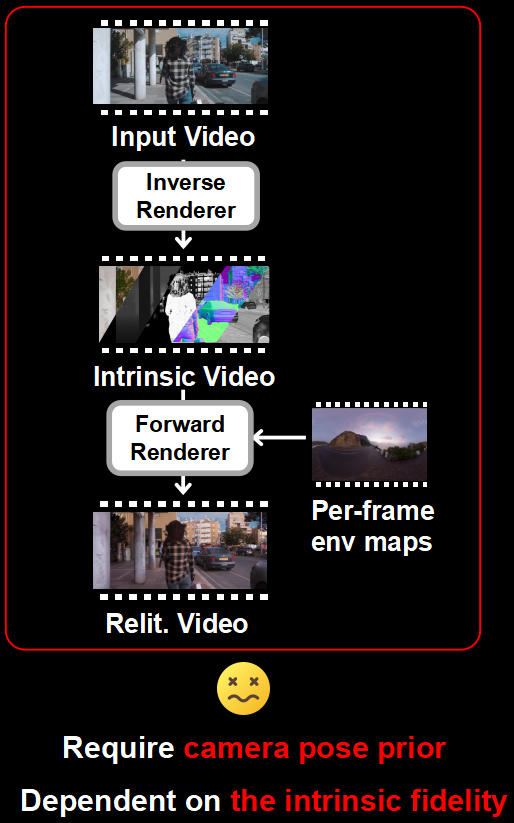
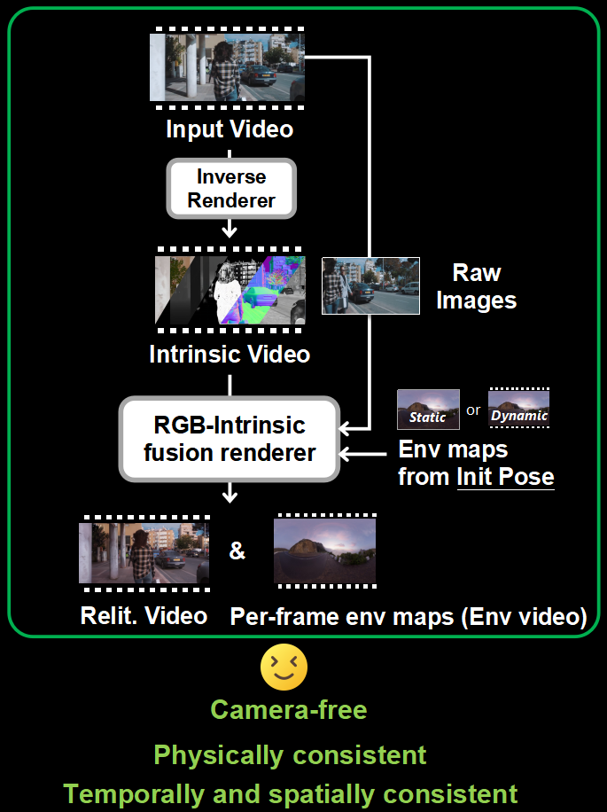
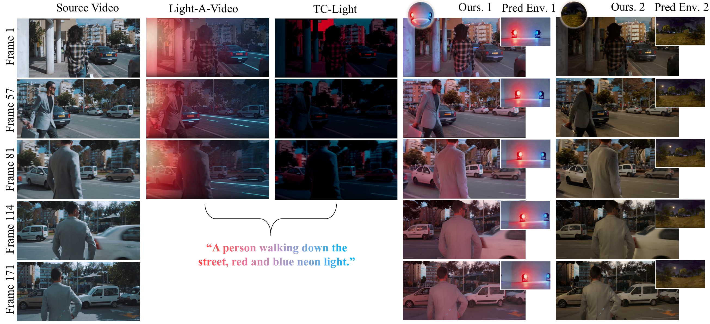
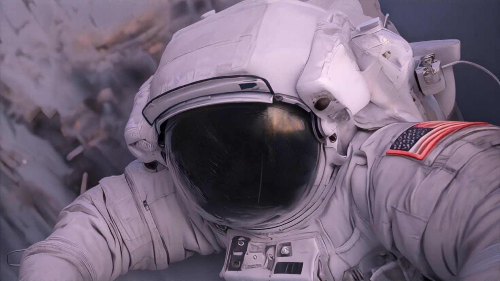
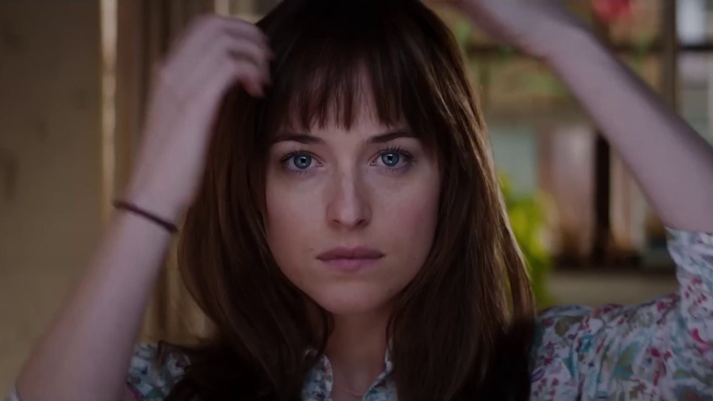
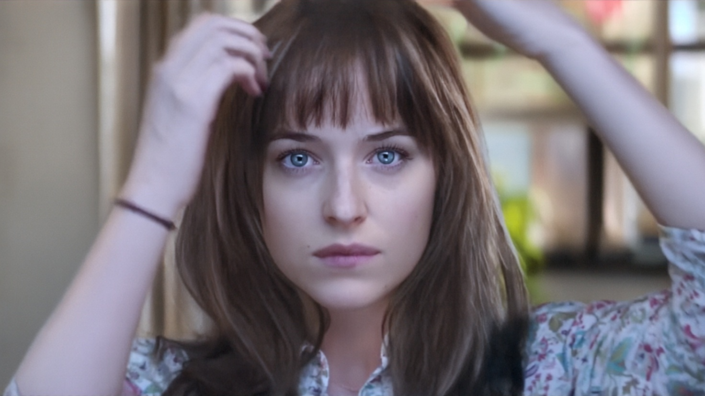
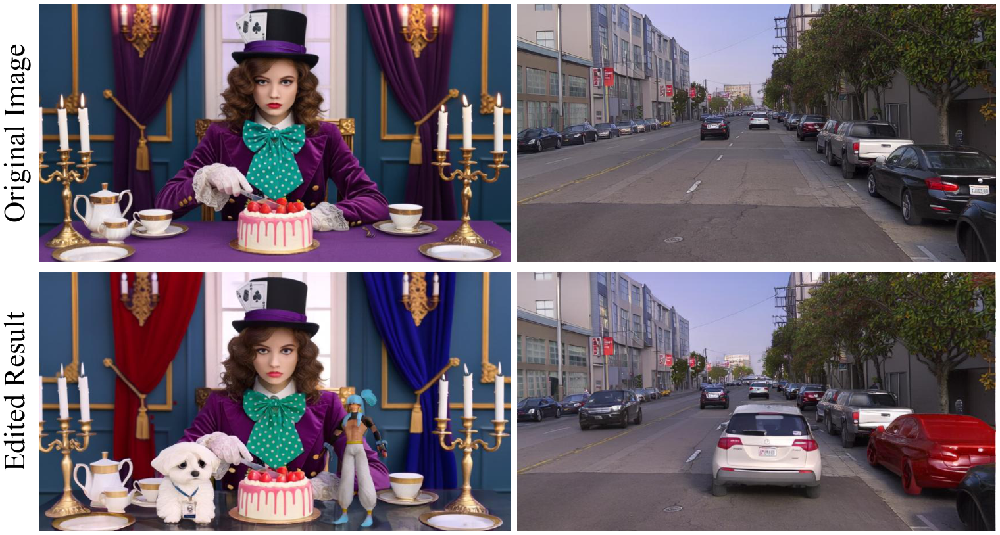
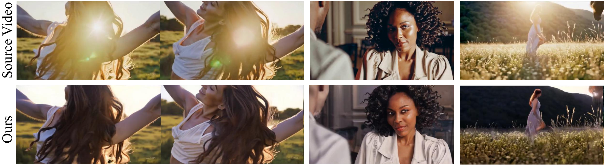

Baseline A
Prompt-based and direct relighting

SIGGRAPH Conference Papers 2026
RELIGHT VIDEO BY JOINTLY LEARNING ENVIRONMENT VIDEO
A physically consistent and temporally stable video relighting framework that jointly predicts relit videos and viewpoint-aligned per-frame warped environment maps, without requiring prior camera poses.
Project Overview
Relit-LiVE combines an RGB-intrinsic fusion renderer with lighting prediction, so relit frames and per-frame warped environment maps are generated together in one process.
Direct relighting often breaks spatial consistency or keeps traces of the original illumination, while render-based alternatives usually rely on camera pose priors and accurate intrinsic decomposition.
Architecture Comparison
Baseline A

Baseline B

Relit-LiVE

Technical Innovations
Raw reference images are explicitly fused into the rendering pathway so the model can recover global illumination cues and preserve delicate material appearance that intrinsic-only pipelines often lose.
Relit frames and per-frame warped environment maps are generated in one diffusion process, enforcing strong geometry-light alignment without explicit camera pose supervision.
Latent interpolation synthesizes diverse multi-illumination supervision, while cycle-consistent self-supervised illumination learning improves temporal coherence on real videos.
Temporal Consistency

Official figure from the paper showing comparison results for long video relighting sequences, including baseline methods, our relit outputs, and predicted environment maps.
Video Results
Visual Showcase
Image Showcase

Lighting preset
Video Showcase


Lighting preset
Applications

Relit-LiVE supports consistent edits to scene content while preserving geometry, illumination interactions, and overall visual coherence.

The learned lighting representation can also remove baked-in illumination effects, producing cleaner appearance while maintaining temporal consistency across video frames.
Resources